Movimiento de muchas partículas¶
Adición de más partículas a la simulación¶
Para simular el movimiento de muchas partículas al mismo tiempo, vamos a seguir el mismo procedimiento de la sección anterior. Es decir, sólo vamos a cambiar los valores de las posiciones, velocidades y aceleraciones iniciales, mientras que dejamos lo demás exactamente como estaba, pues los arreglos de Numpy se van a encargar de hacerlo todo por nosotros.
Por ejemplo, para simular el movimiento de dos partículas, vamos a definir estos valores como:
p0 = np.array([[1, 5], [4, 5]])
v0 = np.array([[2, 0], [-2, 0]])
a0 = np.array([[0, 0], [0, 0]])
Lo que vemos es que ahora cada arreglo se compone de dos sub-arreglos, el primero de los cuales corresponde a la posición, velocidad y aceleración de la primera partícula, mientras que el segundo corresponde a los mismos valores pero de la segunda partícula.
Esto quiere decir que la posición inicial de la primera partícula está en el punto con coordenadas 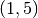 y que la velocidad de la segunda partícula es sólo horizontal, con un valor de -2 m/s. lo que nos dice que se está moviendo hacia la izquierda.
Ejercicios
Definir una constante N para guardar el número de partículas a simular en el sistema. En este caso, hacer:
N = 2 # Número de partículas
Cambiar los valores de p0, v0 y a0 en el programa anterior, por los valores dados arriba.
Colocar dentro de un ciclo for, que vaya desde 0 hasta N, la función colision_muros, para revisar si alguna de las partículas se está chocando los muros.
Generar una animación en VPython del fenómeno anterior, siguiendo para ello estos pasos:
Con un ciclo for generar una lista llamada particulas para guardar las N partículas que se está intentando simular. Cada una de ellas va a estar definida en términos de vis.cylinder (como se hizo en la sección anterior), y sus posiciones iniciales son cada uno de los valores de p0.
Dentro del ciclo for que genera la animación, introducir un nuevo ciclo for para moverse en la lista partículas.
Dentro de este ciclo for, actualizar la posición de cada partícula como:
particulas[i].pos = posicion[i]
donde posicion es un elemento de posiciones
Interacción con otras partículas¶
Al observar la animación generada en el último de los ejercicios anteriores, puede apreciarse que aunque se está simulando correctamente el movimiento de cada partícula por separado, aún hace falta tener en cuenta la forma en que una partícula puede interactuar con las demás.
En esta sección vamos a considerar dos tipos de interacciones:
1. Colisiones¶
La colisión entre dos partículas es similar a la que ocurre entre una partícula y los muros, en el sentido en que lo único que cambia es la velocidad de las partículas que intervienen en el choque, y no su posición o aceleración. La diferencia es que, en este caso, el cálculo es mucho más complejo que antes.
Antes de proceder a describir cómo se calcula el choque, es necesario añadir dos variables más en la sección de constantes:
R = 1 # El radio de las partículas
m = 1 # La masa de las partículas
Ahora bien, para calcular las velocidades que adquieren dos partículas después de que ha ocurrido una colisión entre ellas, vamos a definir una función llamada colision_particulas con cuatro argumentos:
- pos1: la posición de la primera partícula
- pos2: la posición de la segunda partícula
- vel1: la velocidad de la primera partícula
- vel2: la velocidad de la segunda partícula
Con estos valores vamos a escribir el cuerpo de la función siguiendo estos pasos:
Con un if determinar si una partícula se ha chocado con otra.
La condición para que dos partículas se choquen es que la distancia entre sus centros (que corresponde a la raíz cuadrada de pos1 - pos2) sea menor que 2*R, donde R es el radio de las partículas.
Nota
- Para calcular la distancia, utilizar la función norm de la librería numpy.linalg
- Guardar la distancia en una variable llamada d.
Si la condición anterior se cumple, procedemos a calcular los vectores normal y tangencial entre las dos partículas, de la siguiente forma:
Definimos una variable vn para guardar el vector normal como
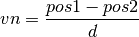
El vector tangencial, vt, se calcula a partir del vector normal como:
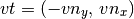
Una vez calculados estos vectores, se procede a calcular la componente normal de las velocidades de las partículas, como:
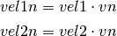
donde
 es el producto punto o escalar entre los dos vectores, y
se puede obtener con la función numpy.dot
es el producto punto o escalar entre los dos vectores, y
se puede obtener con la función numpy.dotCon un if determinar que no se tenga que el signo de vel1n sea igual a 1 y el de vel2n sea igual a -1. Si se tiene este caso, quiere decir que las partículas se están moviendo en direcciones opuestas en el eje normal y que no van a colisionar.
Para revisar el signo de un número, utilizar la función np.sign. Todo lo que sigue debe estar dentro de este if.
Después se calculan las componentes tangenciales de vel1 y vel2 como:
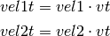
Con estos valores se calculan las velocidades después del choque como:
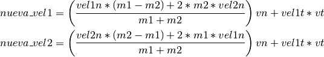
donde 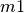 y 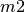 son las masas de la partícula 1 y de la 2, respectivamente. Por sencillez vamos a asumir que estos dos valores son iguales a la constante m definida arriba.
Finalmente, hacer que la función retorne una tupla compuesta de nueva_vel1 y nueva_vel2.
En caso de que el if inicial no se cumpla, hacer que la función retorne los valores originales de vel1 y vel2.
Ejercicios
- Añadir colision_particulas al algoritmo de Verlet por medio de estos
pasos:
- Dentro del ciclo for que calcula Verlet, añadir un nuevo for con un contador i que vaya desde 0 hasta N, para recorrer la lista de partículas.
- Dentro de éste, definir otro for con un contador j, que también vaya de 0 a N, para revisar las posibles colisiones entre i y j.
- Con un if revisar que la partícula i no sea igual a la j, y que i sea menor que j, para no tener que repetir el cálculo de la colisión dos veces.
- Si se cumple este if, llamar la función colision_particulas, con los valores de nueva_posicion y nueva_velocidad para i y j.
- Asignarle el resultado de colision_particulas a los valores de nueva_velocidad de i y j.
- Generar una animación con VPython para comprobar que todo esté funcionando correctamente.
- Añadir una tercera partícula a la simulación, con posición inicial 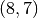 y velocidad inicial 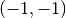. ¿Qué variables y/o funciones es necesario cambiar para ello?
- Hacer que la simulación vaya más rápido sin modificar vis.rate. ¿Qué valor define qué tan rápido se mueve una partícula?
2. Fuerzas con otras partículas¶
Hay varios tipos de fuerzas que una partícula le puede ejercer a otra, pero en esta sección sólo vamos a simular una: la fuerza de gravedad entre la Tierra y un cometa que pasa cerca de ella.
La fuerza de gravedad que un cuerpo 1 le ejerce a un cuerpo 2 se calcula con la fórmula:
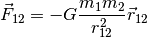
donde  es la constante universal de la gravitación,
es la constante universal de la gravitación,  y
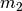 son las masas de los cuerpos y 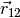 es un vector
unitario en la dirección de línea que va desde el centro de la partícula 1 al
centro de 2.
y
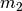 son las masas de los cuerpos y 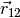 es un vector
unitario en la dirección de línea que va desde el centro de la partícula 1 al
centro de 2.